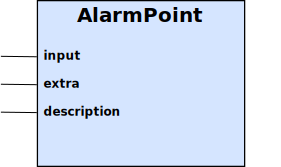
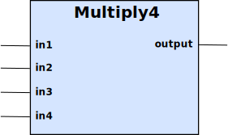

Table of Contents
| Note | |
|---|---|
Bali Automation is a one-stop shop for products, services and solutions in the Building Automation and Energy Management sectors. Suitability of products in other industrial automation fields may or may not exist. |
Bali Automation has a long history of delivering solutions built on the great Internet. Already in 1997, Bali Automation delivered the first industrial automation system built from the ground up on Internet technologies, using a then obscure platform called Java.
Today, we are committed to delivering solutions for the Internet Of Things
Unlike our competitors, we think that Open Internet Standards and Open Data Formats, that have emerge on the Internet scene over the last 15-20 years should be the foundation of all industrial automation systems, and mandated for all Building Automation systems. This eliminates vendor lock-in, freeing the customers of unnecessary cost, the cost of vendors to develop their proprietary systems.
Unlike our competitors, we think that modern standards should be used, such as those from the W3 Consortium, and not opaque protocols developed in the 1970s, such as ModBus. We can communicate with ModBus devices, but it is sub-standard solution.
All Bali Automation systems communicates XML and JSON where ever possible. Programming, report data, historic data and views are all represented in either XML or JSON, available over well-understood HTTP connectivity.
IP numbers have run out. We are living on borrowed time. Internet of Things will accelerate the need of IP numbers, and IPv6 is there to fill that need. Bali Automation is enabling all products to primarily work on IPv6 networks, and provide services and solutions to run IPv6 and IPv4 networks together.
2013-09-08 | Bali Automation releases 1.0 of its new Building Automation and Energy Management platform. |
2013-03-07 | Bali Automation announces a new product suite, the Balistic System, to be developed and delivered later in the year. |
The Balistic™ System is an control system based on open protocols, open data formats and IEEE802.15.4 radio communication standard and the associated ZigBee® protocol suite.
There are multiple advantages of utilizing wireless technology in building automation and energy management systems, especially in existing buildings;
- Less risk in anticipating communication cabling solution,
- Reduction of custom engineering documentation,
- Less mistakes in engineering and installation,
- Ease of installation,
- Easy to extend and expand initial system,
All leading to higher quality, reduced cost and predictable installation schedules.
ZigBee® is an open standards communication protocol on top of the radio specification IEEE802.15.4, which allows so called Mesh networks to be built. In Mesh networks, every node will route messages to other nodes, so that it is only required that each node can communicate with at least one By eliminating a large set of the wiring required, large cost savings can be made in documentation, project management and installation cost.
- Low cost of installation, especially in renovation/upgrading, public areas and energy management systems.
- Low cost of project design and documentation.
The Balistic Rio device is the brain in the Balistic System. It is a modern, secure device running Linux and the Android operating system. It has a high-resolution, touch display, and comes loaded with web browser and many other Android applications that may be useful.
Rio comes mounted in a plastic enclosure for convenient mounting on walls. But it can be ordered without enclosure, for instance to be mounted in electrical cabinet doors.
- 800 Mhz ARM processor
- 256 MB RAM
- 4 GB storage
- 7" touch screen, 800x480 pixels
- Ethernet
- USB Host interface, used for 3G connectivity.
- Loudspeaker and capable of playing any sound.
- Dimension: 128*193*18 mm
Rio is the brain in the Balistic system and consists of an Android tablet computer with the Rio Prime software platform installed.
- Monitoring, control and regulation of AHU, chillers, compressors and district heating consumers, and much more,
- Android® operating system
- The new revolutionary Balistic programming environment
- Driver for ZigBee I/O (XNet)
There is a separate User Manual for operating the Rio Prime platform, as well as an extensive Programming Manual.
| Note | |
|---|---|
Coming in 2014. The specification are subject to change and not guaranteed to be as herein outlined. Please contact Bali Automation if more details are required. |
The RioNet 701 is a general purpose 4 I/O device that communicates with ZigBee.
4 I/O, configurable as inputs or outputs
- DS1820 Temperature sensor input
- 1kHz Pulse Counter input
- 0-10V Analog input
- 0-10V Analog output (max 10mA)
- ZigBee protocol over IEEE802.15.4
- Antenna included
- Package Size - 230mm x 180mm x 150mm
- Package Weight - 0.5kg
| Note | |
|---|---|
Coming in 2014. The specification are subject to change and not guaranteed to be as herein outlined. Please contact Bali Automation if more details are required. |
The RioNet 201 is an easy-to-install Room Temperature Device that is capable to form ZigBee mesh networks, to cost-effectively collect room temperature data from many locations within a building.
- Built-in DS1820 Temperature sensor
- ZigBee protocol over IEEE802.15.4
- Size - 100mm x 50mm x 70mm
- Package Weight - 0.5kg
The Rio NetComm is a Bali provided IPv4-to-IPv6 router, needed to connect the Rio devices to the public Internet. Even on private IPv4 networks, the Rio NetComm will establish a secured IPv6 network directly to the Rio devices.
This allows access to the Rio devices from the public Internet without changes to existing network infrastructure.
Rio NetComm can ALSO use 3G USB adapters to provide IPv6 connectivity to the Rio Devices.
The Rio NetComm Mini comes in one of 2 configurations;
- E - Ethernet to Balistic Rio devices, 3G or WiFi to the Internet.
- W - WiFi to Balistic Rio devices, Ethernet or 3G to the Internet.
Please specify the configuration upon order.
- 100Mbits/s Ethernet WAN port.
- Four 100Mbits/s Ethernet LAN ports.
- USB Host port for 3G USB adapaters.
- WiFi
The Rio NetComm Enterprise is a Bali provided IPv4-to-IPv6 router, needed to connect the Rio devices to the public Internet. Even on private IPv4 networks, the Rio NetComm will establish a secured IPv6 network directly to the Rio devices.
This allows access to the Rio devices from the public Internet without changes to existing network infrastructure.
Rio NetComm can ALSO use 3G USB adapters to provide IPv6 connectivity to the Rio Devices.
Bali Automation recommends the more cost effective Rio NetComm Mini device, suitable for most installations. But there are instances where the installation is made simpler by using a more powerful router, the Rio NetComm Enterprise.
It is capable of simultaneous 3G, Ethernet and WiFi communications. It can connect to Internet via Ethernet and still connect the Balistic Rio devices on Ethernet, something the Rio NetComm Mini is not capable of.
The Rio NetComm Enterprise has a generic configuration, which we think is suitable for most power users, but please verify the actual setup with Bali Automation’s network experts.
- 100Mbits/s Ethernet WAN port.
- Four 100Mbits/s Ethernet LAN ports.
- USB Host port for 3G USB adapaters.
- WiFi
The XNet Communication modules have the ZigBee radio communication circuitry and used to transfer data to/from the processes to the Rio processing unit, where the custom programs are executed.
XNet Communication modules are used either stand alone to measure temperature or mounted on XNet I/O cards. Additionally, every Rio unit contains an XNet Communication module.
The ZigBee® radio standard contains advanced communication algorithms, allowing each node to route messages to other nodes. This is called mesh networking and allows the ZigBee® network to reach much longer distances than a single radio/transmitter can achieve. Therefor, it is critical that the distance recommendations are followed.
IEEE802.15.4 and the related ZigBee® standards provide for ultra-compact, low powered and low cost mesh networking.
Software Options; Each Xnet is pre-programmed with a function. It can be one of the following;
- Temperature measurement
- Regulator
- Pulse Counter
- small footprint (38.0 x 13.5 x 2.0 mm),
- excellent radio sensitivity (-104 dBm),
- Up to +20 dBm power
Extremely low power consumption
- < 6 μA in Sleep mode,
- 23 mA in RX mode,
- 50 mA in TX mode
- Memory capacity, 128K bytes flash memory, 8K bytes RAM, 4K bytes EEPROM
- Analog and Digital Interface
- IEEE 802.15.4 certifierad radiokommunikation
- 2.4 GHz ISM band
Balistic is built around the radio communication standard IEEE802.15.4 and the corresponding software stack ZigBee®.
For electrical connections to process the XNet I/O card is used. The XNet I/O card has a socket for the XNet Communication module. The XNet I/O card is powered by 24VAC, as it is the industry standard power supply source.
- G - 24VAC
- G0 - 24VAC
- Y - Analog Output (0-10V)
- Q - pulse counter
- MAN
- Temperature sensor input
- CN1 - 24V AC input
- CN2 - XNet Communication Module
- CN3 - 12V DC output
- CN4 - Analog Input
- CN5 - Analog Output
- CN6 - Digital Output
- CN7 - Digital Input
- CN8 - DS18B20 temperature sensor
XNet I/O card with a Communication module is mounted at their process section, for instance at the valve motor or next to the energy meter for pulse counting.
The 24VAC to power the valve motor is used to power the XNet I/O card and the 0-10V output from the XNet I/O card is connected to the valve motor input.
- Building Automation Systems
- Energy Management Systems
- Process Monitoring
- Smart Buildings
The care for our environment, global warming and ever increasing energy cost requires innovative thinking and new energy strategies at a global level.
The founders of Bali Automation started their work in energy optimization in the mid-1970s, in research projects following the oil crisis of 1973-1974. Over decades of experience, Bali Automation represents a wealth of energy management know-how, leading-edge technology and is an industry leader in effective energy management strategies and solutions.
In temperate climates, heating becomes the main focus for energy optimization. Obvious solutions, such as double/triple glazed windows and increased heat insulation in walls, roofs, ceilings and floors are standard practices in Northern Europe, Canada, and parts of USA.
But there is much more to do. A lot of energy is wasted due to poor measurements, inadequate controls and outdated approximation methods and algorithms. The common thermostat provides on/off controls, often with a 2 degree Celsius deadband, causing substantial additional energy cost, or reduced comfort.
Other antiquated methods involves using the outdoor temperature as an proxy for how much energy is needed in the building. This proxy is then used for calculating the temperature of radiator systems, but is not self-adjusting. Only lack of comfort drives the (so called) curve up, causing additional cost, and never adjusted downwards. Even temporary discomfort, unrelated to actual problems, may drive up a permanent cost in the building, never re-adjusted to the proper levels.
The solutions to this involves better controls and sensing the actual comfort level, i.e. the indoor temperature, as experienced by the residents of the building.
Ventilation of housing, offices and other premises is a fundamental need for health purposes. Studies performed more than half a century ago have dictated the amount of air to be replenished each hour, irrespective of the actual need.
By the rise of modern technology, it is now possible to cost-effectively measure the need for fresh air, and some countries now allow for active control of airflow if the carbon dioxide levels are actively and constantly monitored.
But, reducing the flow of air, also changes the total balance of the heating/cooling systems, and Bali Automation experts are well aware of this and capable of creating compensations by altering the mechanical installation, if needed.
Bali Automation has been involved in this work for a long time, and have been providing commerical energy optimization solutions in both heating and ventilation since the 1980s.
We offer Energy Optimization Solutions in customized packages, from full service, profit sharing agreements to selling components and access to our data collection infrastructure.


This User Manual describes how to operate the Rio Prime platform via a regular (but modern) browser. The following browsers are expected to work, in preferred order;
- Google Chrome 15 and later
- Firefox 12 and later
- Internet Explorer 9 and later
- Android 4.0 and later
- Safari 6.0 and later
- iPhone 4 and later
- iPad 2 and later
If you are using a browser other than any of those above, and it doesn’t work, Bali Automation will not be able to help you out. Especially for Microsoft Internet Explorer, it is very difficult to make everything work as expected. The most likely feature that breaks in non-supported browsers are the Historic Data Plot, as it uses many advanced web technologies, that Microsoft was late to adopt.
Views are means to see what is happening in the application. Each view should be set up to represent some aspect of the operation, where related information is placed side by for comparison.
There are two different types of views in the Rio Prime.
- Text views
- Graphical views
Text views are suitable when the data presented is not helpful to have as a graphical representation, but where a line-by-line representation is more appropriate. Text views load quicker in the browser, as the relatively large SVG files are not transferred.
Graphical Views are more cumbersome to create, as it involves making drawings of the process and configuring the dynamic elements within it.
Rio Prime uses the Structured Vector Graphics (SVG) format, a specification by the World Wide Web Consortium (who also defines XML, HTML and many other common technologies used on the Internet and by browsers). SVG has many advantages, beyond being a widely accepted graphics format;
- XML - allows for humans to inspect, and to a smaller degree modify, the graphics directly with a regular editor. It is not wise to edit SVG totally by hand.
- Many editors, viewers and tools are available for SVG.
- Co-exist with HTML. Thanks to XML namespaces, SVG documents can be inlined with HTML, a technique that Rio Prime leverages.
- CSS version 3. It is possible to style the SVG graphic using Cascading Style Sheets (CSS), just like all web pages are now styled and themed. This allows libraries of symbols to be created, which doesn’t have a Look-n-Feel theme, which is added or developed separately.
- JavaScript. Thanks to HTML 5, JavaScript is now the only accepted wide-spread scripting technology for the browsers. JavaScript can modify the XML structure any way it wants, and such changes are automatically rendered by the web browser. Rio Prime leverages this technology to provide dynamic data within the graphical view.
- viewer - Can see any view.
- operator - Can modify any view.
Under the list of Views, you find a dropdown list, labeled "Plot Type".
There are 5 plot types, and they define the algorithm used to draw the lines between the sampled historical data points.
It is difficult to explain the theory behind each of these, and it is easier to look at stylistic examples.


- viewer - Can see any view/history plot.
- operator - Can modify any view/history plot.
- viewer - Can see any report.
- operator - Can modify any report.
- operator - Can see any program.
- programmer - Can modify any programmer.
The Users & Roles viewer has not been implemented yet.
Will be available in version 1.1, early 2014.
The Device Settings have not been implemented yet.
Will be available in version 1.1, early 2014.
The built-in Help system has not been implemented yet.
Will be available in version 1.1, early 2014.
This section is all about details of the engineering required to execute system integration of Bali Automation’s products in real world projects. The following topics are covered in great detail;
- Programming - Get the Balistic system to do what you need.
- Networking - Connect the Balistic system to the Internet
- I/O Components - How to use the Balistic I/O components in the programming.
- Electrical - Connecting Balistic components to sensors, actuators and other equipment.
This documentation is still under being authored, and we are a long way from being complete. Please contact Bali Automation if there is any area(s) which you think is lacking, is inaccurate or needs more details.
The Rio Balistic system is capable of communicating in the networking environment of modern day. It is solely based on open standards, open protocols and open formats. This means that Rio Balistic is capable of leveraging and co-existing with existing enterprise infrastructure and 3G technologies.
The world is converging, from proprietary protocols and formats, to TCP/IP systems. TCP/IP has proven itself to be able to scale to unprecedented heights, completely unimaginable 20 years ago. TCP/IP has been so successful that even the unlimited number of 4 billion IP numbers once available have run out, and we are on the brink of a new IP version, namely IPv6.
The Rio Balistic system fully embraces IPv6 to the fullest extent possible. It is necessary to use IPv6 to allow the coming age of Internet of Things, where not only people will be 24/7 connected to the Internet, but all equipment, machines, devices and possibly body area networks consisting of the watches, clothes, shoes, glasses and other items we wear. IPv6 has such a massive address space that the smallest unit for a routed segment, say your living room, is 16,000,000,000,000,000,000 addresses. And the smallest number of networks a company can apply for is 65,000 of those. For people growing up in the current situation of IPv4 number shortage, it is mind-blowing large numbers.
Rio is expected to be fully connected to the Internet. It is well-known that the Internet is a volatile world and security is of utmost importance. This section documents how to correctly set up networking for Rio.
First of all, we must understand the basic requirements;
Rio needs client access to Internet for various reasons, such as;
- Centralized management of user access rights,
- Centralized management of configuration data,
- Sending of e-mail (only if no other mail server is available)
- Reading Weather information
- Reading other public information relevant to the application.
Rio needs to be accessible from the Internet, i.e. a Server;
- Programming the device,
- HMI - Viewing the process
- Accessing Historic data
- Backup/Restore to recover from hardware failures
- Viewing Reports
- Network Monitoring for early warnings of network failures
- Upgrading of the Rio Prime process control platform.
There are 3 recommended options for connecting Rio to the Internet, and we are dividing the explanation into a section of layman’s language and one section intended for IT departments and TCP/IP/network savvy persons.
As described above, each Rio device requires full access to the Internet, both as a server and as a client. We are here trying to outline the 3 basic options that we recommend to customers, depending on their specific needs.
If you think that your organization have a better solution, please contact Bali Automation’s Network department for discussion and it is likely that we can accommodate your request(s).
This option means that you, the Customer, retain full control of the networked environment. Bali Automation or its affiliates don’t have any opinion on exactly how you fulfill these requirements, which could be done with separate wiring, VLANs, punching holes in firewalls, or port forwarding.
This option will let the customer remain in full control of the network installation, Bali Automation and its affiliates are not involved.
Requirements; * Each Rio device is accessible from the public Internet over the following protocols; HTTP - the public port can be any one, the Rio device is listening on port 8778. SSH - it is used for upgrading the Android applications running on the Rio devices. The SSH port on the Rio Device is 33477. * Each Rio device needs access to an SMTP server for sending email. * Each Rio device needs to access HTTP on the public Internet. Ports are unknown and application dependent. * Configuration data is read from an HTTP server. This server can either be internal on your network, or using Bali Automation’s central system. * Configuration data contains 5 links, pointing to static JSON documents, *. User access and roles, *. SMTP mail server data, *. Alarm delivery information *. Centralized time channels *. Advertisements in the screen saver. * Bali Automation and its affiliates have full IPv6 and IPv4 capability, so it is up to the customer to choose network protocol. We recommend IPv6 as the management is easier.
In this option, Bali will provide a Rio NetComm Mini router, which will open an IPv6 tunnel (using openvpn, which is an encrypted UDP stream on port 1194) to central Bali tunnel broker(s).
The Rio NetComm Mini is equipped with a standard Linux firewall, restricted to the ports and IP numbers needed. Firewall details are available upon request.
The LAN ports on the Rio NetComm Mini are default set to 10.87.78.x/24.
These are the requirements for this to work; * DHCP server for the WAN port on Rio NetComm Mini, which provides an IP number and a default gateway to the public Internet. * Stateful firewall allowing returning UDP packets to be forwarded to the originating port on the inside.
We also recommend; * Routing from the internal company network to the Rio devices, to improve latency and reduce dependency on vendor systems.
In case the customer is not interested in being involved, the Rio NetComm Mini is equipped with a 3G USB stick. To remove vendor lock-in, the subscription of the 3G account should be in the hands of the customer.
The Rio NetComm Mini will establish a IPv6 tunnel to the central Bali tunnel broker(s), but also expose the Rio devices on the public IP number of the 3G subscription, but on different ports. The private IP numbers used on the LAN network between the Rio NetComm Mini and Rio are 10.87.78.x. The HTTP servers on those devices are exposed on the ports 8000+x, the SSH ports are exposed on the ports 2200+x.
This means that for IPv6 connectivity, the Rio devices are dependent on Bali infrastructure. If that infrastructure fails, direct access for critical access (HTTP and SSH) will remain intact. The advantage of this option is, of course, reduction of dependency on vendor provided infrastructure. The disadvantage is that the 3G networks, and the USB sticks used, are not 100% reliable. The Rio NetComm Mini will power cycle the USB stick to try and keep the 3G connection operational as much as possible, but there will be network failures from time to time.
Advantages;
- No dependency on central infrastructure for rudimentary access (HTTP, SSH) making the overall system more resilient to failure.
- No vendor lock-in.
Disadvantages;
- 3G networks, and the equipment available to connect to 3G, isn’t 100% reliable and occasionally it will be unavailable.
- Monthly subscriptions are paid by customer,
The Rio device has an Ethernet port on it. Rio requires public IPv6 connectivity. The Rio NetComm Mini device is made to handle the IPv6-to-IPv4 communication, and should be placed between the IP4 network and the IPv6 network of Rio devices.
One Rio NetComm Mini can handle many Rio devices, but it is often difficult to provide the cabling needed. The low price of the Rio NetComm Mini makes it possible to place one router in front of each Rio device if needed.
The Rio device has WiFi built-in. Rio requires public IPv6 connectivity. The Rio NetComm Mini device is made to handle the IPv6-to-IPv4 communication, and should be placed between the IP4 network and the IPv6 network of Rio devices.
The Rio NetComm Mini is very neat, but is limited in its number of ports. If you are using the Ethernet port on the Rio NetComm Mini for connecting to the Internet, via a provided Ethernet, then the Balistic Rio devices must be connected over WiFi.
The Rio device has an USB Host interface that is capable of 3G connectivity. Unfortunately, not all 3G USB adapters are compatible with the Android system. Please contact Bali Automation to verify a particular adapter.
Connecting the Balistic Rio devices directly to 3G is not recommended, and only used as a last resort.
Bali Automation and its affiliates have found out that 3G networks are not stable enough, and the Android system is not 100% capable to always recover from these fluctuations.
If this is attempted, please ensure that the Balistic Rio device is power cycled every day (we recommend early in the morning, say 06:15) to recover from this.
The Rio process controller is loaded with the power Rio Control software package. This allows users to program process functionality via a easy-to-use browser interface.
The programming model is similar to that of electrical wiring. A block is created and wires from block outputs are connected to other block’s inputs.
The Absolute function, f(x) = |x|

Inputs
| Name | Type | Default | Description |
|---|---|---|---|
input | Double | 0.0 | The input value, or x in the function formula above. |
The Absolute block removes any sign on the value on its input and forward that to its output.
So, for any negative value x, the function returns -x. But for any positive number y the function will return y as it is already positive.
The input value for the absolute function.
The Absolute value of the input value.
output.set( Math.abs( input.get() ), forceOutput );
Add4 block sets its output to the sum of the 4 inputs.
Inputs
| Name | Type | Default | Description |
|---|---|---|---|
in1 | Double | 0.0 | First input. |
in2 | Double | 0.0 | Second input. |
in3 | Double | 0.0 | Third input. |
in4 | Double | 0.0 | Fourth input. |
Outputs
| Name | Type | Description |
|---|---|---|
Output | Double | The sum of the four inputs, or output = in1 + in2 + in3 + in4 |
This simple block sets the output to the sum of the 4 inputs, in1, in2, in3 and in4.
output.set( in1.get() + in2.get() + in3.get() + in4.get(), forceOutput );

Inputs
| Name | Type | Default | Description |
|---|---|---|---|
input | Boolean | false | When the input goes high the Alarm is activated and when the input goes low the Alarm is deactivated. |
description | String | The Alarm text to be sent. | extra |
The input triggers the alarm state transitions. When the input goes high the Alarm is activated and when the input goes low the Alarm is deactivated.
The description contains the text that becomes the alarm text in the alarm message. It can be a plain text, but it can also contain additional information.
| Argument | Type | Description |
|---|---|---|
{1} | String | The AlarmPoint identity, including the program name. E.g. heatController.overheatAlarm |
{2} | Boolean | The value of the input. |
{3,number} | Double | The value of the extra input. |
{4,date} | Date | Current time at the state change of the alarm. |
{4,time} | Date | Current time at the state change of the alarm. |
The {3,number} can be complemented with a format string, similar to the one in Excel. For instance {3,number,0.0#} will produce values like 12.0, 12.3, 12.34. It is also possible to do {3,number,percent} to multiply by 100 and postfix a % sign. {3,number,integer} will produce an output without decimal digits. And finally, {3,number,currency} will format the value into the local currency, e.g. $1,234.56.
The {4,date} and {4,time} can be complemented with short, medium, long, full or a patterm, such as {4,date,yyyy-MMM-dd} or {4,time,HH:mm:ss}. The following pattern characters are available;
| character | Description | Example |
|---|---|---|
G | Era designator | AD |
y | Year | 1996; 96 |
M | Month in year | July; Jul; 07 |
w | Week in year | 27 |
W | Week in month | 2 |
D | Day in year | 189 |
d | Day in month | 10 |
F | Day of week in month | 2 |
E | Day in week | Tuesday; Tue |
a | Am/pm marker | PM |
H | Hour in day (0-23) | 0 |
k | Hour in day (1-24) | 24 |
K | Hour in am/pm (0-11) | 0 |
h | Hour in am/pm (1-12) | 12 |
m | Minute in hour | 30 |
s | Second in minute | 55 |
S | Millisecond | 978 |
z | Time zone | Pacific Standard Time; PST; GMT-08:00 |
Z | Time zone | -0800 |
This is the extra value that can be associated with the alarm and be made part of that alarm text. See above.
if( newValue.equals( oldValue ) )
{
return;
}
AlarmEvent alarm;
if( newValue )
{
alarm = new AlarmActivationEvent( "point", getAlarmText() );
}
else
{
alarm = new AlarmDeactivationEvent( "point", getAlarmText() );
}
bus.send( identity(), alarm );AnalogInput block is used to obtain numeric data from an external source, such as a sensor or a value from the Internet.

Inputs
| Name | Type | Default | Description |
|---|---|---|---|
url | String | <empty> | The URL to read. |
k | Double | 1.0 | The multiplier for the raw value coming from the external system. |
m | Double | 0.0 | The offset for the raw value coming from the external system. |
expr | String | <empty> | The expression used to parse the read value from the URL, into a numeric value. |
The value output is updated by the values received from the URL, after application of the expr which is URL Driver specific.
All values are scaled with a multiplier and an offset so that value = external * x + m.
The expression input is used to parse the content that was obtained from the URL. See the URL Driver for detailed information on the formats and how the evaluation is done.
The url follows the W3C standard of URI formats. Which protocols that are supported are;
Protocols
| Scheme | Format | Description |
|---|---|---|
http | Reads well-formed pages via http. | |
xnet | xnet://device/point | Reads the point from the device. Valid point names are ai, aq, di, dq, setp, ts. The device is the number of the XNet unit. |
The multiplier of the read value.
The offset of the read value.
this.value.set( rawValue * k.get() + m.get(), forceOutput );
AutoManual block is the logical equivalent of an Auto-0-Manual switch.

Inputs
| Name | Type | Default | Description |
|---|---|---|---|
input | Boolean | false | The value that the output should have when position is in Auto mode. |
position | Double | -1 | Position is the selector of Auto, On, or Off. A negative number puts the block in Auto mode and the output is set to the input. A positive number will set the output to true and 0.0 will set the output to false. |
Outputs
| Name | Type | Description |
|---|---|---|
Output | Double | The output is set to the input, if the position is a negative number. If position is 0.0, the output is set to false, and if the position is set to a positive number, the output is set to true. |
Many electrical installations have a 3-step, rotary switch to allow people to override the automatic controls of some equipment. This block type represents that functionality in a logical manner.
This represents the input from the automatic part of the system, which could be overridden by the AutoManual block.
This represents the rotary switch itself.
| Value | Description |
|---|---|
>0 | This sets the output to ON (true). |
0.0 | This sets the output to OFF (false). |
<0 | This sets the output to follow the input. |
Type: Boolean.
boolean in = input.get();
double pos = position.get();
final boolean out;
if( pos < 0 )
out = in;
else
out = pos > 0;
output.set( out, forceOutput );The Curve block computes the output by scaling the input according to a 6 breakpoint curve.
Inputs
| Name | Type | Default | Description |
|---|---|---|---|
input | Double | 0.0 | The input value, or x in the function formula above. |
x1 | Double | 0.0 | The lowest X-axis value. If the input is smaller than this value, then the output is set to y1. |
x2 | Double | 0.0 | 2nd X-axis value. |
x3 | Double | 0.0 | 3rd X-axis value. |
x4 | Double | 0.0 | 4th X-axis value. |
x5 | Double | 0.0 | 5th X-axis value. |
x6 | Double | 0.0 | The highest X-axis value. If the input is larger than this value, then the output is set to y6. |
y1 | Double | 0.0 | 1st Y-axis value. |
y2 | Double | 0.0 | 2nd Y-axis value. |
y3 | Double | 0.0 | 3rd Y-axis value. |
y4 | Double | 0.0 | 4th Y-axis value. |
y5 | Double | 0.0 | 5th Y-axis value. |
y6 | Double | 0.0 | 6th Y-axis value. |
Outputs
| Name | Type | Description |
|---|---|---|
output | Double | The computed value of input. First find the x(n) and x(n+1), within which the input value falls. Using k=(y(n)-y(n+1)) / (x(n) - x(n+1)), and m = y(n) - k * x(n), compute the output (y) from input (x). |
Curve functions are common in building automation systems. This implementation uses 5 segments of linear (y = k * x + m).
The input is scaled by a arbitrary curve function, which follows linear function between breakpoints.
public void update( boolean forceOutput )
{
double input = this.input.get();
double out;
if( input > x6.get() )
{
out = y6.get();
}
else if( input > x5.get() )
{
out = compute( input, x5.get(), x6.get(), y5.get(), y6.get() );
}
else if( input > x4.get() )
{
out = compute( input, x5.get(), x6.get(), y5.get(), y6.get() );
}
else if( input > x3.get() )
{
out = compute( input, x5.get(), x6.get(), y5.get(), y6.get() );
}
else if( input > x2.get() )
{
out = compute( input, x5.get(), x6.get(), y5.get(), y6.get() );
}
else if( input > x1.get() )
{
out = compute( input, x5.get(), x6.get(), y5.get(), y6.get() );
}
else
{
out = y1.get();
}
output.set( out, forceOutput );
}
private double compute( double input, double xLow, double xHigh, double yLow, double yHigh )
{
double k = ( yLow - yHigh ) / ( xLow - xHigh );
double m = yHigh - k * xHigh;
return input * k + m;
}The IndoorRegulator will adjust its output once every 24 hours, by
Output[now] = Output[yesterday] + ( Setpoint - Indoor[yesterday] ) * r

Inputs
| Name | Type | Default | Description |
|---|---|---|---|
indoor | Double | 0.0 | The measured indoor temperature. |
guide | Double | 0.0 | The safety guide, which normally comes from an outdoor temperature Curve block. |
window | Double | 0.0 | The percentage (%) deviation that the computed output is allowed to be above or below the guide value. |
setpoint | Double | 0.0 | The setpoint for the indoor temperature. |
r | Double | 0.0 | The room constant. The output is adjusted by r * ( setpoint - measured ) |
enable | Boolean | false | Enables the regulator. If set to false, the guide input will be set to the output. |
Outputs
| Name | Type | Description |
|---|---|---|
Output | Double | If enable is false, or if not a complete 24 hour cycle (i.e. up to 48 hours) has been completed, then the output is set to the guide input value. Otherwise the output will be adjusted at 03:00 local time by the error multiplied by the room constant r. The output will never deviate window % away from the guide input value. |
error | Double | The difference between the indoor measurement and the setpoint. A negative value indicates that the indoor temperature is below the setpoint. |
curveDiff | Double | The difference between the guide value and the output. A negative value indicates that the current output is larger than the guide value. |
enabled | Boolean | Enabled is false either when the enable input is false, or if 24 hours sampling of indoor has not completed yet. This sampling will start at the first 03:00 and conclude 24 hours later. So up to 48 hours of delay may occur before the IndoorRegulator block starts its room regulator. |
If the computed output is outside the window of the guide, then a D class and energy category alarm will be sent. The name of the alarm is the name of this block, and the condition describes the error.
The code for this block is unfortunately significantly large to not easily make sense here. It has therefor been modified here to show the intent, but the actual details are somewhat different.
public void update( boolean forceOutput )
{
double guideValue = guide.get();
if( !enable.get() || yesterdayAverage.isNaN() )
{
enabled.set( Boolean.FALSE );
output.set( guideValue );
roomComputedOutput = output.get();
}
else
{
double deviation = guideValue * window().get() / 100;
double minValue = guideValue - deviation;
double maxValue = guideValue + deviation;
if( roomComputedOutput > maxValue )
{
output.set( maxValue );
if( condition == null )
{
condition = roomComputedOutput + " > " + maxValue + " (" + guideValue + "/" + deviation + ")";
AlarmActivationEvent event = new AlarmActivationEvent( name, condition, "D", "energy" );
bus.send( name, event );
}
}
else if( roomComputedOutput < minValue )
{
output.set( minValue );
if( condition == null )
{
condition = roomComputedOutput + " < " + minValue + " (" + guideValue + "/" + deviation + ")";
AlarmActivationEvent event = new AlarmActivationEvent( name, condition, "D", "energy" );
bus.send( name, event );
}
}
else if( roomComputedOutput < maxValue - 1.0 && roomComputedOutput > minValue + 1.0 )
{
if( condition != null )
{
AlarmDeactivationEvent event = new AlarmDeactivationEvent( name, condition, "D", "energy" );
bus.send( name, event );
condition = null;
}
output.set( roomComputedOutput );
}
enabled.set( Boolean.TRUE );
error.set( indoor.get() - setpoint.get() );
curveDiff.set( guideValue - output.get() );
}
}
// This method is called once every 24 hours, after the initial start up period is over.
void updateRegulator()
{
yesterdayAverage = indoorSum / indoorCounter;
indoorSum = 0.0f;
indoorCounter = 0;
nextTime = nextTime.plusHours( 24 );
if( !yesterdayAverage.isNaN() && enable.get() )
{
roomComputedOutput = roomComputedOutput + ( setpoint.get() - yesterdayAverage ) * r.get();
}
update( false );
}ManualOverride allows manual override of analog signals.
Inputs
| Name | Type | Default | Description |
|---|---|---|---|
input | Double | false | The input to the block. The input is only set to the output if override is false. |
manual | Double | --- | The manual input is set to the output value when the override input is set to true. This is to ensure no sudden movement of the output value. After that, as long as the override=true, the output is to manual value when it changes. |
override | Boolean | false | If override is false, the output follows the input. If override is true, then output follows manual. |
Outputs
| Name | Type | Description |
|---|---|---|
Output | Double | The output is set to the input, if the override is false. If override is true, the output is set to manual. |
This block type allows analog signals to be overridden, typically by human operators, but can be used for other purposes as well. Its function is very similar to the Choice block, but has additional handling of the manual swap over step.
When the override signal is set to true, the manual input is set to the output signal to ensure that there is no sudden movement in the output. The Choice block doesn’t have this special handling.
This represents the input from the automatic part of the system, which could be overridden by the AutoManual block.
double out;
if( override.get() )
{
out = manual.get();
}
else
{
out = input.get();
}
output.set( out, forceOutput );Multiply4 block sets its output to the product of the 4 inputs.

Inputs
| Name | Type | Default | Description |
|---|---|---|---|
in1 | Double | 0.0 | First input. |
in2 | Double | 0.0 | Second input. |
in3 | Double | 0.0 | Third input. |
in4 | Double | 0.0 | Fourth input. |
Outputs
| Name | Type | Description |
|---|---|---|
Output | Double | The sum of the four inputs, or output = in1 * in2 * in3 * in4 |
This simple block sets the output to the product of the 4 inputs, in1, in2, in3 and in4.
output.set( in1.get() * in2.get() * in3.get() * in4.get(), forceOutput );
Inputs
| Name | Type | Default | Description |
|---|---|---|---|
input | Double | 0.0 | The input value to be checked. |
lowLimit | Double | 0.0 | The lowest value (inclusive) that indicates within range. |
highLimit | Double | 100.0 | The highest value (inclusive) that indicates within range. |
Outputs
| Name | Type | Description |
|---|---|---|
output | Boolean | If the input is within range, then the output is |
The input value to be checked if it is within range.
The lowest value (inclusive) that the input value can be to be considered within range. If the input
is lower than this value, the output is false.
The highest value (inclusive) that the input value can be to be considered within range. If the input
is higher than this value, the output is false.
The output is true if the input value is within range, i.e. larger than, or equal to, the lowLimit value
AND smaller than, or equal to, the highLimit value. If the input value is not within this range, the output
is set to false.
double in = input.get();
boolean out = in >= lowLimit.get() && in <= highLimit.get();
output.set( out, forceOutput );The RsLatch is a single-bit memory, set and reset by the two different inputs.

Inputs
| Name | Type | Default | Description |
|---|---|---|---|
set | Boolean | false | The set input will set the output to |
reset | Boolean | false | The reset input will set the output to |
Outputs
| Name | Type | Default | Description |
|---|---|---|---|
output | Boolean | false | The output is set to |
The RsLatch is a single bit memory, which is set to true when the set input is set to true and set to false
when the reset input is set to true (provided the set input is no longer true).
Typically, the set and reset inputs are triggers, which go to true during a short period of time, and that this
occurrence is to be remembered.
If the set input is going to true, it sets the output to true. The output will remain true after the
set input has gone false. The set input has higher priority than the reset input, so if both are true the
output will be true.
If the reset input is going to true, it sets the output to false. The output will remain false after the
reset input has gone false. The set input has higher priority than the reset input, so if both are true the
output will be true.
The output will remain in the same state as it was previously, until either set or reset inputs are changed.
If set is true the output will be set to true, regardless of the state of reset input.
If the reset is true and the set is false, then and only then the output will be set to false.
if( forceOutput && !set.get() && !reset.get())
output.set( output.get(), forceOutput );
else if( set.get() )
output.set( true, forceOutput );
else if( reset.get())
output.set( false, forceOutput );The Substract block sets the output to the difference of its two inputs.
f(in1,in2) = in1 - in2
Inputs
| Name | Type | Default | Description |
|---|---|---|---|
in1 | Double | 0.0 | The |
in2 | Double | 0.0 | The |
The left hand argument of the subtract function.
The right hand argument of the subtract function.
The output is set to the difference between in1 and in2, so that output = in1 - in2
output.set( in1.get() - in2.get(), forceOutput );
Inputs
| Name | Type | Default | Description |
|---|---|---|---|
fromMonth | Double | 1 | The starting month of the active state. |
fromDate | Double | 1 | The starting day of the starting month of the active state. |
untilMonth | Double | 1 | The starting month of the active state. |
untilDate | Double | 1 | The starting month of the active state. |
Outputs
| Name | Type | Description |
|---|---|---|
output | Boolean |
|
dayOfYear | Double | The number of days from the beginning of the year until |
The YearSchedule block provides a timing function that starts on a given day of the year and finishes on another day of the year.
The active state of the output is starting on the same day at 0:00 on the from day of the year. The active state period finishes at 23:59 on the until day of the year. That means that both the from and the until days of the year are inclusive of the active state.
It doesn’t matter which year it is. If the from day is after the until day, then the active state period is over the New Year, as expected.
This is the starting month of the active state.
This is the day of the starting month for when the active state is starting.
This is the month when the active state finishes.
This is the day of the month when the active state finishes.
The output is true during the active state, otherwise it is false.
MonthDay currentDay = new MonthDay( now.monthOfYear().get(), now.dayOfMonth().get() );
MonthDay from = new MonthDay( fromMonth.get().intValue(), fromDate.get().intValue() );
MonthDay until = new MonthDay( untilMonth.get().intValue(), untilDate.get().intValue() );
boolean out;
if( from.isBefore( until ) )
{
out = ( currentDay.equals( from ) || currentDay.isAfter( from ) )
&& ( currentDay.equals( until ) || currentDay.isBefore( until ) );
}
else
{
out = ( currentDay.equals( from ) || currentDay.isAfter( from ) )
|| ( currentDay.equals( until ) || currentDay.isBefore( until ) );
}
output.set( out, forceOutput );
dayOfYear.set( (double) now.dayOfYear().get(), forceOutput );In the field of Building Automation and Energy Management Systems, there are new challenges arriving every year. New Technology, New Regulation and New Opportunities are constantly putting pressure on the industry to innovate and upgrade existing technology stacks.
Bali Automation builds all its products on Open Standards, Open Protocols and Open Data Formats, for 2 important reasons;
- No individual company can keep up with the technology changes happening. We need to leverage the open source solutions to produce timely, high quality and secure products.
- The Internet has paved the way for large-scale, robust data exchanges and interoperability in a way never seen before. It is proven with millions of man-years of experience, hard work and collaboration. It is unwise to not leverage this across all industries with data exchange needs.
Bali Automation pioneered the industrial automation sector, when it in 1997 introduced Bali Control System, which we think was the first industrial automation system built from scratch on top of Internet technologies of the day.
Bali Automation is continuing its tradition to be at the forefront of technology, and in 2013 we introduced the Balistic System, based on more Internet technologies than before and the new Internet Of Things standard called ZigBee, a protocol and radio communication standard for Mesh Networks. We also fully embrace IPv6, the Internet Protocol of the future, allowing all devices on the Internet to be publicly reachable.
Bali Automation is seeking new partners to concur the world with this new and exciting technology. We work together with localized System Integrators, in the fields of Building Automation and Energy Management Systems.
Our subsidiary Bali Facility Management, Sweden, offers Energy Management services and mandated to assist similar companies to get started with Bali Automation products and services.
Please contact Bali Automation for more information.
Bali Automation Ltd South Henan Road 555, Block 15, 1901 200010 Shanghai China
Contact: Niclas Hedhman, niclas@bali.io
Bali Automation Sdh Bhd Kuala Lumpur Malaysia
Contact: Robert Lim, robert@bali.io
Lars Thomssen, lars@bali.ioBali Facility Management AB Norra Grängesbergsgatan 11 214 50 Malmö Sweden
Contact: Richard Hänsel, richard@bali.io
Alex Hänsel, alex@bali.ionetworks@bali.io - For IP networking questions. programming@bali.io - For questions and help about block programming. support@bali.io - For other support issues.